Costão do Santinho Resort
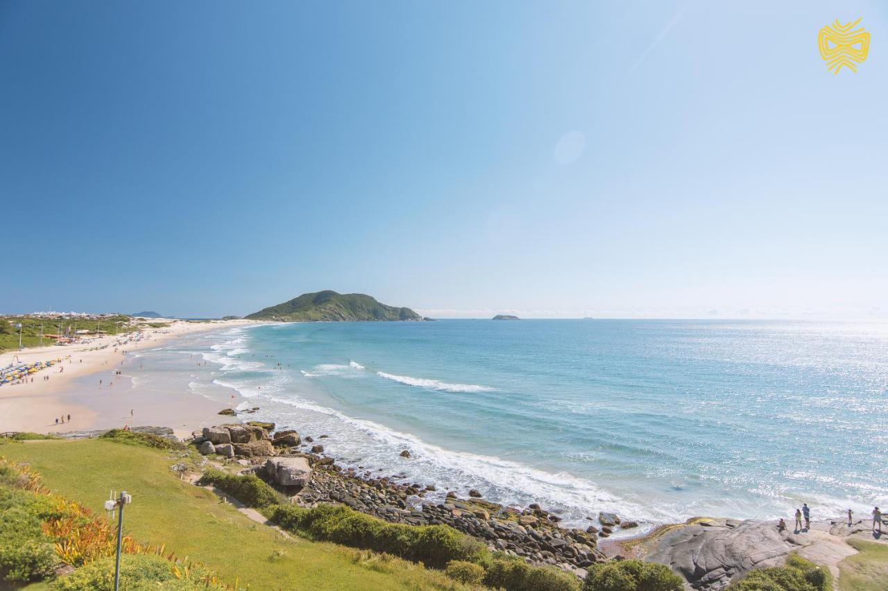
♦ Descrição ♦
Costão do Santinho foi premiado 7 vezes como o melhor resort de praia do Brasil.
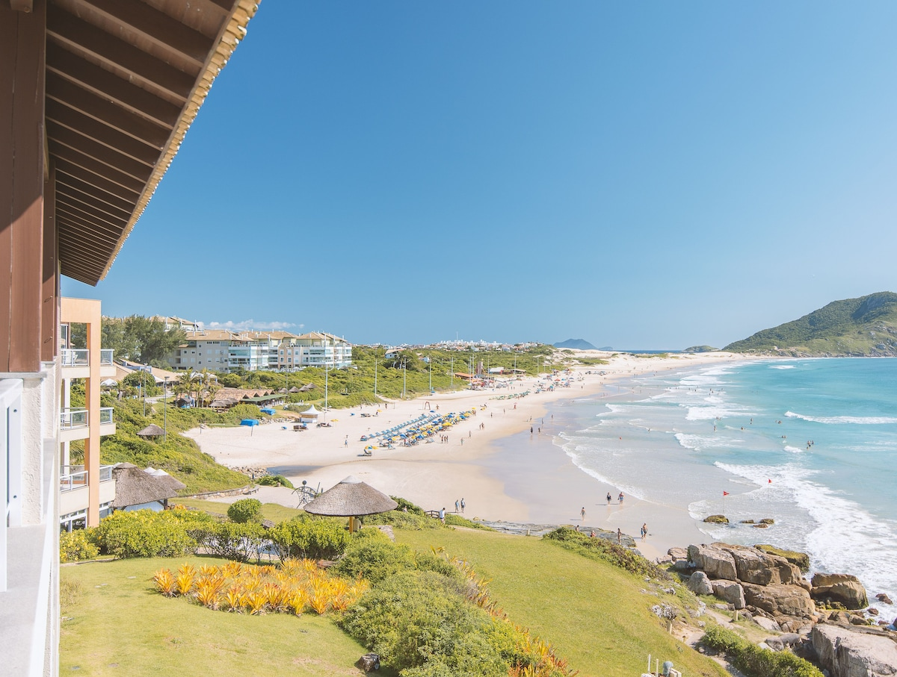♦ Localização ♦
Este resort premiado fica na Praia do Santinho, em Florianópolis, rodeado pela mata nativa e sítios arqueológicos. O Projeto Tamar fica a 13 km de distância do resort. o aeroporto mias próximo é o aeroporto internacional de Florianópolis a 28 km.
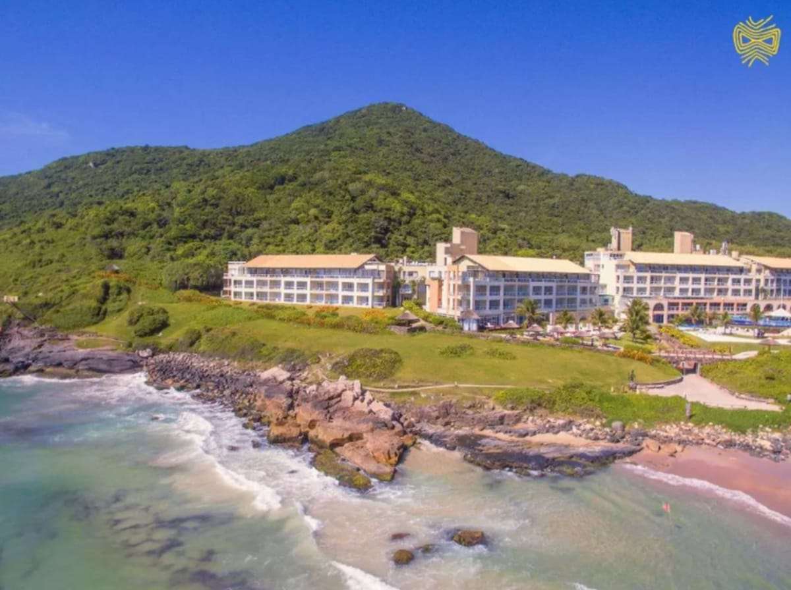
♦ Acomodação♦
As acomodações do Costão do Santinho Resort dispõem de vista do jardim ou do mar, TV e música ambiente. Alguns quartos incluem uma churrasqueira, enquanto todos têm um estacionamento privativo.
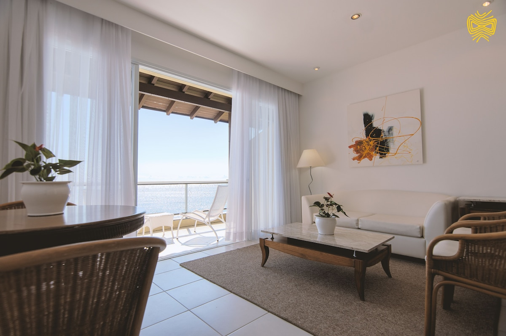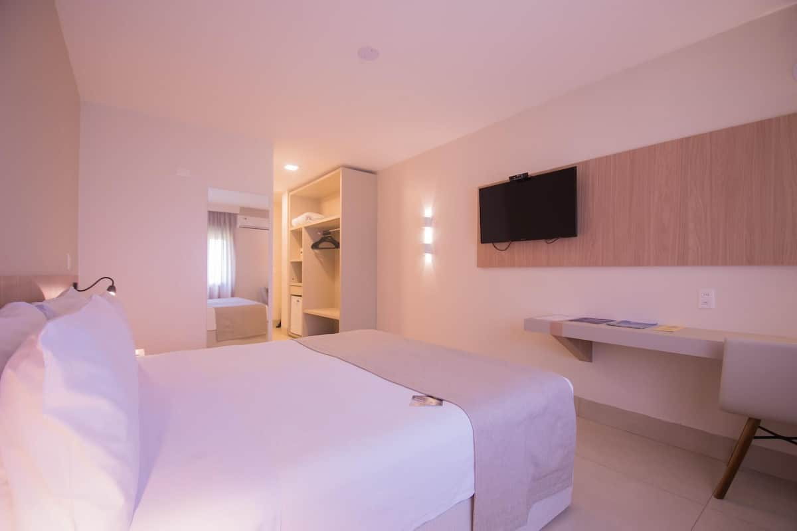
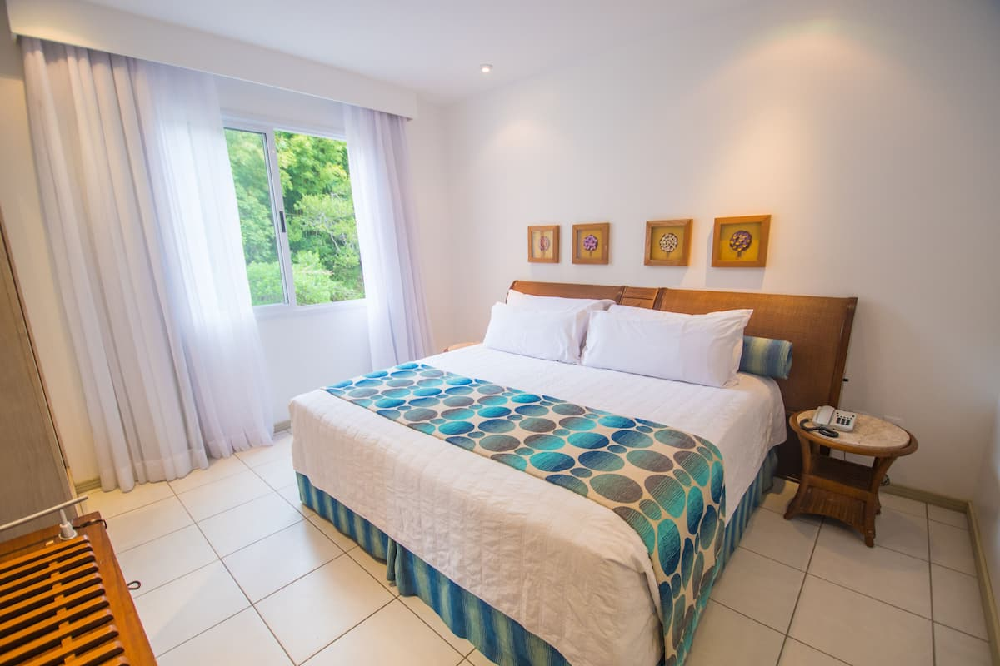
♦ Alimentação ♦
A propriedade oferece 6 restaurantes, 5 deles all inclusive. O Rancho do Pescador é um restaurante casual, especializado em receitas de frutos do mar dos Açores e de Santa Catarina, e o Nossa Senhora Vitória oferece menu internacional contemporâneo. Outras opções incluem culinárias italiana e japonesa, além de churrasco. Já o Rancho do Pescador não faz parte do regime all inclusive.
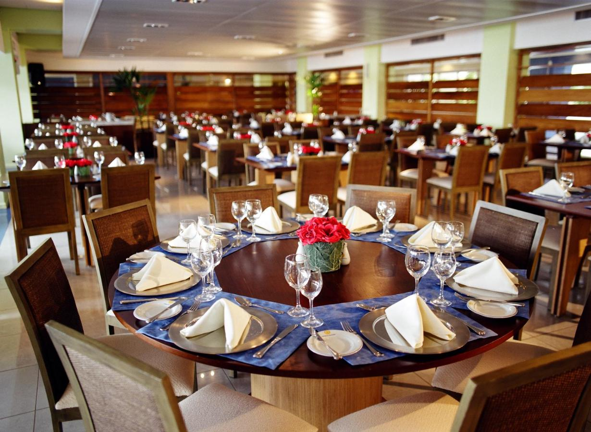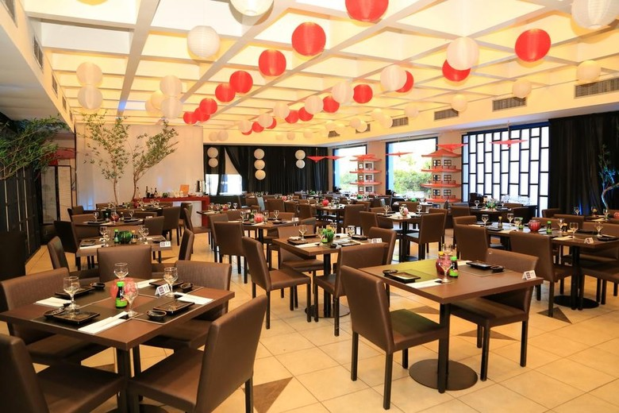
♦ Lazer ♦
As instalações esportivas incluem piscinas e quadras de tênis. Para sua comodidade, o Wi-Fi está disponível gratuitamente em todas as áreas. O clube infantil organiza atividades monitoradas. Hóspedes de todas as idades podem participar de passeios ao Morro das Aranhas, um santuário de vida selvagem. Além disso, o resort realiza apresentações de cantores nacionais famosos. O spa dispõe de diversas opções de tratamentos, de desintoxicação a talassoterapia. Você pode desfrutar de uma massagem relaxante ou de uma sessão de hidromassagem. Um salão de beleza também está disponível.

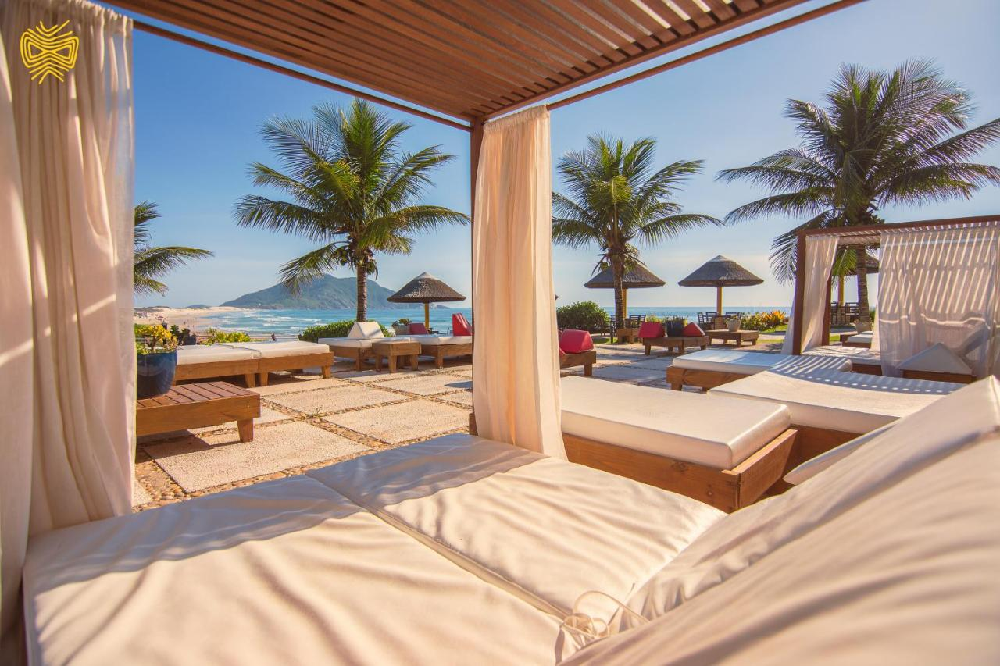
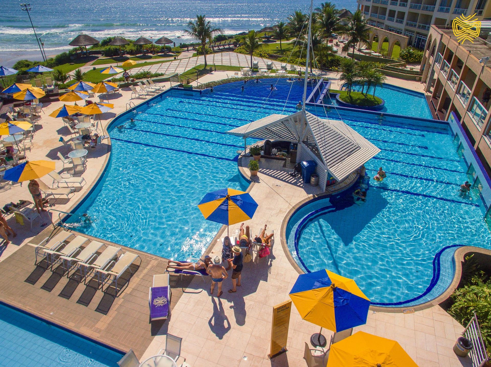
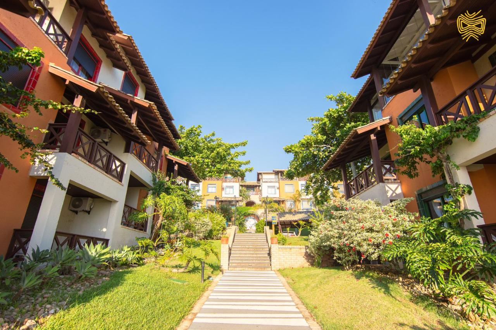
♦ Reservas ♦
Entradas a partir das 15h. Os hóspedes devem apresentar um documento com foto e cartão de crédito no momento do check-in.
Saída até 11h.
Cancelamento/pré-pagamento: As políticas de cancelamento e pré-pagamento variam de acordo com o tipo de acomodação.
Políticas para crianças: Crianças de qualquer idade são bem-vindas. Crianças com 12 anos ou mais são consideradas adultos nesta acomodação. Para ver os preços e as informações de ocupação certos, informe quantas crianças fazem parte do seu grupo e a idade delas.
Não há exigência de idade para o check-in.
Animais não são permitidos.